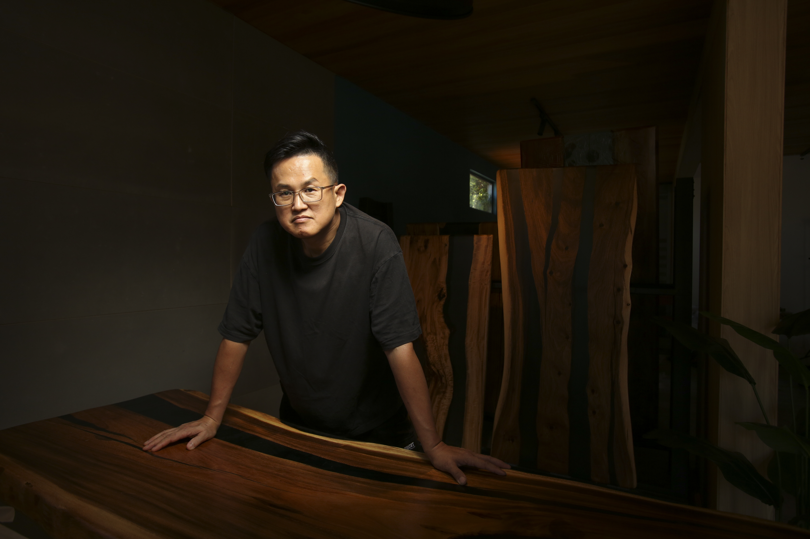

品牌故事
BRAND STORY
工房1976製桌所創立於2025，位於台灣南投，由設計師董學修累積數十年對材料及木作製作理解及沈澱， 專注於媒材創新與展現木料特性的現代設計。工房1976製桌所重視設計的協調與製作品質， 嘗試理解每塊木料獨有的紋理及痕跡，並以匠人之心打磨製作。
1976 Table Workshop was founded in 2025 and is based in Nantou, Taiwan. Founded by designer Dong Xue-Xiu, the studio draws on decades of accumulated knowledge and experience in materials and woodworking, focusing on material innovation and contemporary design that highlights the inherent qualities of wood. 1976 Table Workshop values harmony in design and excellence in craftsmanship. By carefully understanding the unique grain, texture, and traces found in each piece of wood, every work is shaped and finished with the dedication of a craftsman.
工房1976製桌所は2025年、台湾・南投に設立されました。 デザイナー董學修が長年にわたり培ってきた素材と木工への理解と経験をもとに、 素材の新たな可能性を探り、木が持つ本来の特性を生かした現代的なデザインに取り組んでいます。 工房1976製桌所は、デザインの調和と高い製作品質を大切にしています。 一枚一枚の木材が持つ固有の木目や表情、痕跡と向き合い、 職人の心をもって丁寧に磨き、仕上げています。

主理人
DIRECTOR
董學修
DONG XUE-XIU
董學修，1976年生於南投，工房1976製桌所主理人， 活躍於小屋建築設計及規劃，近年研究木作創新製作。 董學修相信以精粹的形式賦予木料全新生命， 並將設計存在於生活之間。
Born in Nantou in 1976, Dong Xue-Xiu is the founder and director of 1976 Table Workshop. His practice spans small-scale architectural design and spatial planning, while in recent years he has focused on exploring innovative approaches to woodworking and furniture making. Dong believes that refined forms can give new life to wood, allowing design to become a natural and enduring presence within everyday life.
董學修は1976年、台湾・南投生まれ。工房1976製桌所の主宰を務めています。 小規模建築の設計や空間計画を中心に活動し、 近年は木工における新たな製作方法や表現の可能性を研究しています。 董學修は、洗練されたかたちによって木材に新たな生命を与え、 デザインを日々の暮らしの中に自然に存在させることを大切にしています。